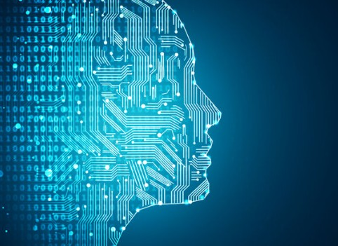

AI
인공지능(人工智能, 영어: artificial intelligence, AI)은 인간의 학습능력, 추론능력, 지각능력을 인공적으로 구현하려는 컴퓨터 과학의 세부분야 중 하나이다. 정보공학 분야에 있어 하나의 인프라 기술이기도 하다.[1][2] 인간을 포함한 동물이 갖고 있는 지능 즉, 자연 지능(natural intelligence)과는 다른 개념이다 인간의 지능을 모방한 기능을 갖춘 컴퓨터 시스템이며, 인간의 지능을 기계 등에 인공적으로 시연(구현)한 것이다. 일반적으로 범용 컴퓨터에 적용한다고 가정한다. 이 용어는 또한 그와 같은 지능을 만들 수 있는 방법론이나 실현 가능성 등을 연구하는 과학 기술 분야를 지칭하기도 한다.
AI체험해보기.
목록
CNC - 공작 기계를 이용한 가공 코드를 컴퓨터가 소수점 3자리까지 계산하는 방식이다. 가장 원시적인 인공지능의 한 형태이다.
비디오 게임 - 원시 인공지능이다. 딥블루, 알파고 역시 알고 보면 비디오 게임 형태의 바둑 인공지능이다.
알파고 - 바둑 인공지능이다.
Watson - IBM에서 만든 인공지능으로, 종류가 다양하며 의학, 금융, 방송 등에 쓰인다.
The Start Project - 영어로 된 질문에 답변하는 웹 기반 시스템이다.
Cyc - 실세계와 논리적 추론 능력에 관련된 광범위한 상식으로 구성된 지식기반 시스템.
ALICE - 사용자와 대화를 주고받을 수 있는 프로그램.
Alan - 사용자와 대화를 주고받을 수 있는 프로그램.
ELIZA - 1970년대에 개발된 심리치료사 역할을 하는 프로그램.
AM - 1970년대에 더글러스 레넛(Douglas B. Lenat)이 개발한 수학의 개념들을 형식화하는 프로그램.
PAM (Plan Applier Mechanism) - 1978년 John Wilensky에 의해 개발된 줄거리 인식 시스템.
SAM (Script Applier Mechanism) - 1975년에 개발된 줄거리 인식 시스템.
SHRDLU - 1968년에서 1970년 사이에 개발된 초창기 자연 언어 인식 시스템.
Creatures - 뉴널넷 두뇌와 정교한 생화학에 기반한 유전코드로 생명체를 탄생시키고 진화시키는 컴퓨터 게임.
Eurisko - 휴리스틱으로 구성된 문제 해결 언어. 휴리스틱을 어떻게 사용하며 변경해야 할지에 대한 휴리스틱을 포함하고 있다. 1978년 더글러스 레넛이 개발.
X-Ray Vision for Surgeons - 매사추세츠 공과대학교 의학 비전(MIT Medical vision) 연구팀이 개발.
심심이 - 한국어로 대화를 주고받을 수 있는 프로그램. 사용자에 의한 학습이 가능하도록 하여 대중적으로 성공했다. 2002년 최정회에 의해 개발.[151][152]
Stable Diffusion web UI - AI 그림을 생성할 수 있는 프로그램. 사용자가 직접 모델을 학습할 수 있고, 학습한 결과에 따라 여러 그림체를 표현할 수 있다.[153]